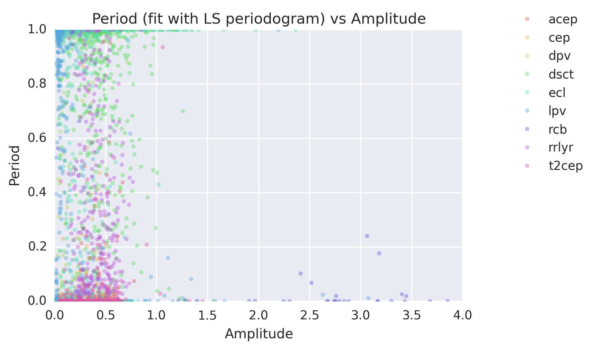
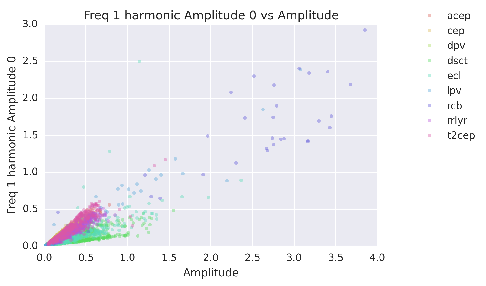
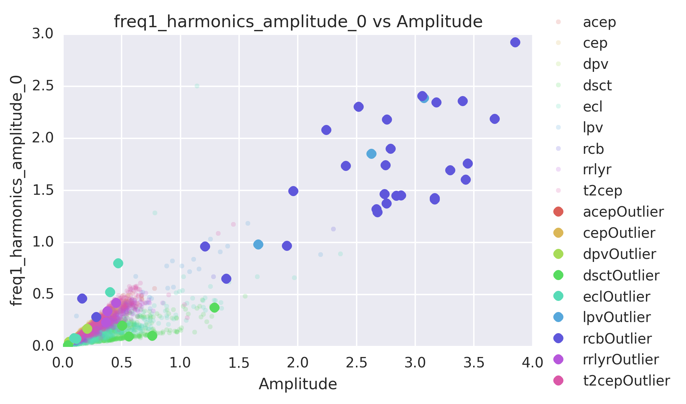

Data & Initial Exploration
Timeseries Data and Feature Extraction
Data used in the present study are a sample of the larger dataset used in Nun et al. 2014. In particular, data was gathered through the third phase of the Optical Gravitational Lensing Experiment (OGLE-III), an experiment primarily devoted to detecting gravitational microlensing events and transiting planets in the Galactic Bulge, the constellation Carina, and both Magellanic Clouds (Large Magellanic Cloud, Small Magellanic Cloud). Data was collected through OGLE-III throughout a period from 2001 until 2009; throughout years of monitoring, OGLE helped create the largest catalogs of variable stars, a portion of which we use in our project. Here, we focus on data from the LMC; data from the infrared (I) and visible (V) channels are used.
Data from the OGLE-III LMC observations include light curves from nine different classes of objects. Descriptions of these classes and the amount of data used for each class are provided in the table below.
| Object class | Description | Large Dataset | Total |
|---|---|---|---|
| Anomalous Cepheids (acep) | Stars with periods characteristic of comparatively longer-period RR Lyrae variables (0.4 to 2 days), but much brighter by luminosity; these stars are also more massive (1.3 to 2.2 solar masses) than RR Lyrae stars. | 82 | 83 |
| Cepheids (cep) | Radially pulsating, high luminosity (Ib-II) variable stars with amplitudes ranging from several hundredths to 2 magnitudes in the V band. They have similar temperatures to the Sun, with spectral types from F to K (spectral type at maximum light is F) with periods in the range of 1-50 days. | 2139 | 3375 |
| Double Periodic Variables (dpv) | Semi-detached interacting binaries characterized by orbital photometric variability with time scales of a few days and a long photometric cycle lasting roughly 33 times the orbital period. | 136 | 137 |
| $\delta$ Scuti Variables (dsct) | (Also known as a dwarf cepheid) Variable star with luminosity variations due to both radial and non-radial pulsations of the star surface. Class V-III variable stars with amplitudes less than 1 mag; they have periods between 30 minutes and 8 hours. $\delta$ Scuti variables have spectral types ranging from A to early F, and are the second most abundant pulsating variable in our galaxy after white dwarfs. | 1252 | 2788 |
| Eclipsing Binary Stars (ecl) | Binary systems of stars with an orbital plane lying near the line-of-sight of the observer. The components of these systems periodically eclipse one another, causing a decrease in apparent brightness to the observer with period on the timescale of minutes to years. Changes in apparent combined brightness of the system have period coincident with the components' orbital motion. | 15377 | 26121 |
| Long Period Variables (lpv) | Pulsating red giants or supergiants with periods ranging from 30-1000 days. Are usually of spectral type M, R, C, or N. | 14883 | 91995 |
| R Coronae Borealis Variables (rcb) | Hydrogen-deficient, carbon and helium-rich, high-luminosity stars which belong to spectral types Bpe-C, which are simultaneously eruptive and pulsating variables. These stars show slow non-periodic fadings with rapid decline and slow recovery, combined with cyclic pulsations with amplitudes up to several tenths of a magnitude. | 22 | 23 |
| RR Lyrae Stars (rrlyr) | Radially pulsating white giant A-F stars with amplitudes from 0.2 to 2 magnitudes. Short period (0.05 to 1.2 days) stars which belong mostly to the spherical component of the Galaxy. | 14913 | 24906 |
| Type II Cepheids (t2cep) | Low mass stars which pulsate with periods ranging from 1 to 50 days. Old, typically metal-poor stars with amplitudes from 0.3 to 1.2 magnitudes, with a characteristic bump on the decline side in their light curves. | 202 | 203 |
Note that the R Coronae Borealis (rcb) variables are considered as outliers for our purposes. As noted above, these RCB variables are hydrogen-deficient, carbon and helium-rich, high-luminosity stars which belong to spectral types Bpe-C, which are simultaneously eruptive and pulsating variables. These stars show slow non-periodic fadings with rapid decline and slow recovery, combined with cyclic pulsations with amplitudes up to several tenths of a magnitude. Their high luminosity and combination of eruptive and pulsating variable characteristics, as well as the small number of this type of variable star catalogued in the OGLE-III experiment, led us to artificially tag this class as an outlier class. We hope that our outlier detection algorithms will be able to detect these differences, since there are very few R Coronae Borealis variables in our dataset as compared to objects in other classes.
The first step of the outlier detection process is performing dimensionality reduction on the astronomical time series dataset described above. Each time series is reduced into a 57-dimensional feature vector, with features calculated using the FATS time series analysis library. (We also contributed new features to this library.) A list of the features used is provided in the table below, and further documentation regarding the specific features used can be found in the library and in our code. These features were calculated on the Harvard Odyssey Cluster in parallel, since the cluster had infrastructure for parallelization.
[hide table of features]
| Feature | Reference |
|---|---|
| Amplitude | Richards et al., 2011 |
| Anderson-Darling test | Kim et al., 2008 |
| Automean | None |
| Autocorrelation length | Kim et al., 2011 |
| Beyond1Std | Richards et al., 2011 |
| CAR$_\sigma$ | Pichara et al., 2012 |
| CAR_tmean | Pichara et al., 2012 |
| CAR$_\tau$ | Pichara et al., 2012 |
| Con | Kim et al., 2011 |
| $\eta_e$ | Kim et al., 2011 |
| Flux percentile Ratio Mid 20 | Richards et al., 2011 |
| Flux percentile ratio Mid 35 | Richards et al., 2011 |
| Flux percentile ratio Mid 50 | Richards et al., 2011 |
| Flux percentile ratio Mid 65 | Richards et al., 2011 |
| Flux percentile ratio Mid 80 | Richards et al., 2011 |
| Linear trend | Richards et al., 2011 |
| Max slope | Richards et al., 2011 |
| Mean | Kim et al., 2014 |
| Mean variance | Kim et al., 2014 |
| Median Absolute Dev | Richards et al., 2011 |
| Median BRP | Richards et al., 2011 |
| Pair slope trend | Richards et al., 2011 |
| Percent amplitude | Richards et al., 2011 |
| Percent difference flux percentile | Richards et al., 2011 |
| Period (Lomb-Scargle) | Kim et al., 2011 |
| Period (fit) | Kim et al., 2011 |
| $\psi_{\textrm{cs}}$ | Kim et al., 2014 |
| $\psi_{\eta}$ | Kim et al., 2014 |
| Q31 | Kim et al., 2014 |
| Rcs | Kim et al., 2011 |
| Skew | Richards et al., 2011 |
| Small kurtosis | Richards et al., 2011 |
| Standard deviation | Richards et al., 2011 |
| Stetson-K | Richards et al., 2011 |
| Frequency $i$, Amplitude $A_j$, for $i\in\{1,2,3\}, j\in\{1,2,3,4\}$ | Richards et al., 2011 |
| Frequency $i$, Relative phase $\phi_j$, for $i\in\{1,2,3\}, j\in\{1,2,3,4\}$ | Richards et al., 2011 |
Table D1. Timeseries features and citations in the FATS library. These 57 features were calculated for the light curve timeseries data.
As part of this project, we made contributions to the FATS library, creating 24 features representing the amplitudes and phases of various Lomb-Scargle-periodogram deduced frequencies and harmonics. These 24 features are included in our 57-dimensional feature space.
To train the mixture of experts model, a sample of 1913 light curves were used: 296 from lpv, 293 from dsct, 297 from ecl, 202 from t2cep, 294 from cep, 82 from acep, 291 from rrlyr, and 22 from rcb. Light curves were used only if there was data from both the I and the V channels.
Data Visualization
To visualize the 57-dimension data points more easily, principal component analysis (PCA) was done on the extracted time series features for each light curve. The first two principal components were used to make a 2D plot (Figure D1). PCA was used because visualizing a 57-dimensional space on a 2D image is very difficult. One could imagine plotting the data points on axes of each pair of features. However, this would create too many (57 choose 2) plots and therefore would be hard to easily grasp the shape of the data point cloud. PCA is a great way to draw a plane through the 57-dimensional data point cloud in such a way that the plane captures the most variation in the data. Projecting the data points on this place thus may allow visualization of outlier points more easily. We note that PCA was solely used as a visualization tool, and was not used for any of the mathematical mechanics in building the outlier detection models.

Figure D1. Light curves in the PCA plane. Principal component analysis (PCA) was done on the extracted time series features for each light curve. Each dot represents a light curve. The color represents the known class labels of the light curve. Time series data from the visible (V) (top) and infrared (I) (bottom)channels are shown.
As can be seen, the rcb class appears to be the most outlierly, with points spread out across the PCA plane, separated from the main cluster of points in the other classes. This was the reason we chose to use the rcb class to test our outlier detection methods.
Initial Exploration
We started our exploration by plotting the light curves in feature space, projected onto two feature axes at a time. We might be curious at seeing whether some of the outliers detected by our methodology show up as obvious visual outliers in projected two-dimensional feature space. Below are some of the plots generated by projecting the light curves onto various combinations of two features.

Figure D2. Light curve data projected onto amplitude and mean axes. It seems that amplitude may be a feature that will account for the separation of outliers from the rest of the data.
{kind=link}
Figure D3. Light curve data projected onto amplitude and period axes.
{kind=link}
Figure D4. Light curve data projected onto Amplitude and Frequency axes.
One might expect that the points which are far away from the clusters of points might be denoted as outliers. Indeed, running preliminary single-expert models on the data and generating the same graphs confirms our intuition: the points in red on the plots below are outliers marked by single-expert models. Note that they seem to be far from the other points (in general) in the projections selected. Click on each image and then use the left and right arrow keys to clearly switch between the original projection and the projection marked by outliers.

Figure D5. Light curve data projected onto amplitude and mean axes. Projection of light curve feature vectors onto amplitude and mean axes. Outliers marked in red, calculated from KNN-1 single-expert model.

Figure D6. Light curve data projected onto amplitude and period axes. Projection of light curve feature vectors onto amplitude and period axes. Outliers marked in red, calculated from KNN-1 single-expert model.
{kind=link}
Figure D7. Light curve data projected onto Amplitude and Frequency axes. Projection of light curve feature vectors onto amplitude and frequency axes. Outliers marked in red, calculated from KNN-1 single-expert model.